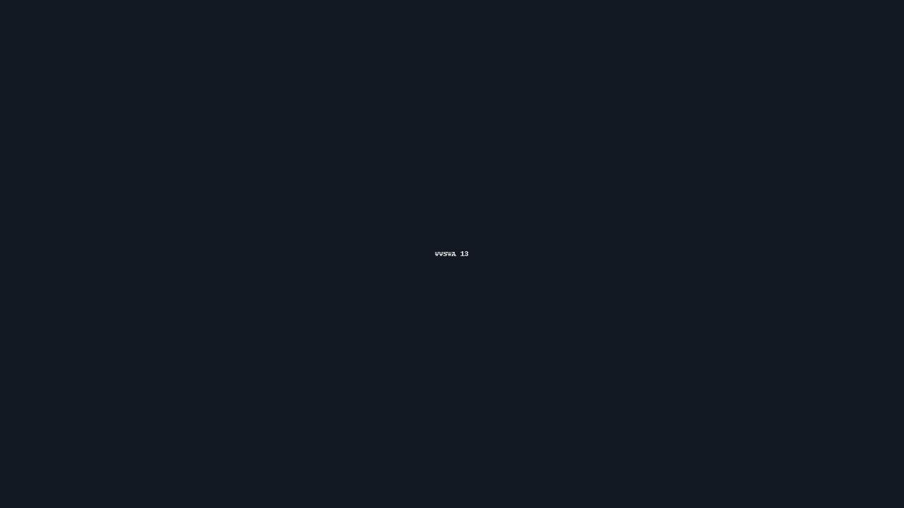

Signaling for Rescue: Be Seen, Be Heard
Objective
Be seen and heard using panels, mirrors, sound, and night lighting matched to rescue windows.
Scenario (Example)
Example: Solo hiker with ankle sprain; clear skies till 18:00, then overcast; occasional aircraft.
Ground-to-Air
- Panels: big arrow or SOS; straight, long lines.
- Triangles of three: fires or reflectives.
- Movement: slow, deliberate waves.
Mirror Technique
- Face sun; V with fingers.
- Sweep the bright dot across the aircraft path.
- Start before the pass; lead the target.
Sound
- Whistle: three short blasts every minute.
- Use canyon walls to throw sound.
Night
- Headlamp/strobe in SOS.
- Chem light on cord—slow circle.
Real Example
Treeline group used a triangle of ponchos and a dusk mirror sweep to cue a helicopter on its first turn.
Checklist
- Signal mirror or foil
- Hi-vis panel/tarp
- Whistle
- Headlamp
Contingencies
- No sun → panels + whistle; save flares for line-of-sight.
- Dense canopy → move to clearings/ridges.
- Aircraft depart → hold position; they’re vectoring ground teams.
After-Action
Repack with a dedicated mirror and hi-vis panel; note what drew attention fastest.
← Previous | All Articles | Next →